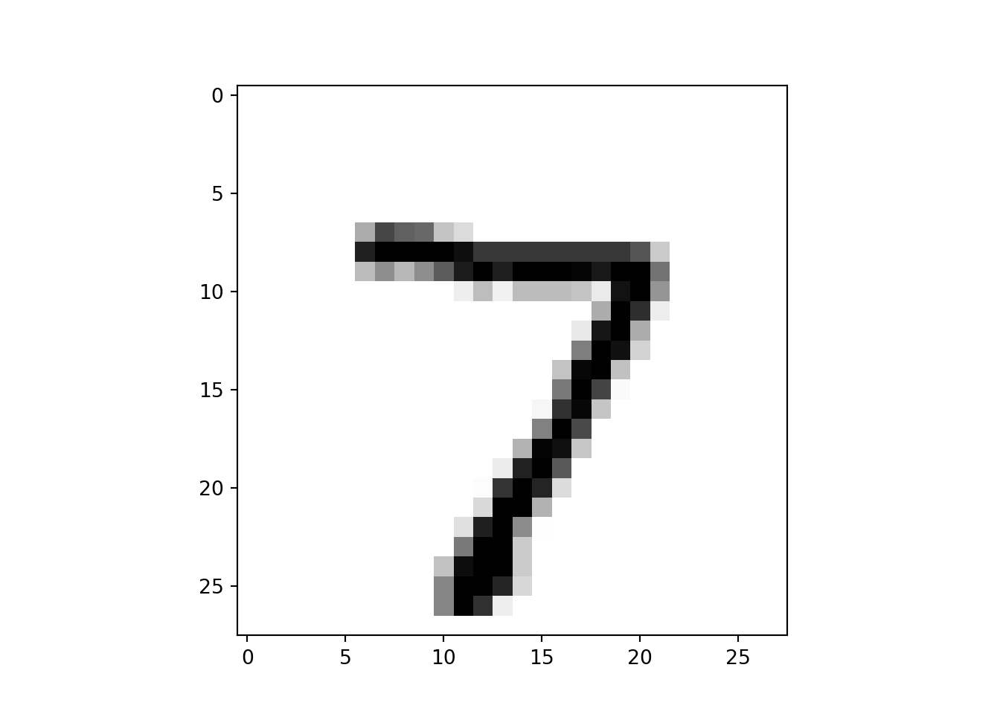

Code
# Requires the latest pip
#pip install --upgrade pipwith mnist data in python

# Requires the latest pip
#pip install --upgrade pip# Requires the latest pip
#pip install tensorflowcheck tensorflow version
import tensorflow as tf
print(tf.__version__)2.14.0mnist = tf.keras.datasets.mnist
(x_train, y_train), (x_test, y_test) = mnist.load_data()
x_train, x_test = x_train / 255.0, x_test / 255.0training with 60000 picture with 28* 28 pixels
x_train.shape(60000, 28, 28)training with 60000 label
y_train.shape(60000,)training with 10000 picture with 28* 28 pixels
x_test.shape(10000, 28, 28)training with 10000 label
y_test.shape(10000,)Both train and test have 10 calss 0-9
set(y_train){0, 1, 2, 3, 4, 5, 6, 7, 8, 9}set(y_test){0, 1, 2, 3, 4, 5, 6, 7, 8, 9}import pandas as pd
pd.value_counts(y_test)1 1135
2 1032
7 1028
3 1010
9 1009
4 982
0 980
8 974
6 958
5 892
Name: count, dtype: int64import matplotlib.pyplot as plt
plt.imshow(x_test[0], cmap='gray_r')
model = tf.keras.models.Sequential([
tf.keras.layers.Flatten(input_shape=(28, 28)),
tf.keras.layers.Dense(128, activation=tf.nn.relu),
tf.keras.layers.Dense(10, activation=tf.nn.softmax)
])model.compile(
optimizer = tf.keras.optimizers.legacy.Adam(),
#optimizer = tf.keras.optimizers.Adam(),
loss = 'sparse_categorical_crossentropy',
metrics=['accuracy'])model.fit(x_train, y_train, epochs=5)Epoch 1/5
1/1875 [..............................] - ETA: 3:29 - loss: 2.2527 - accuracy: 0.1875
107/1875 [>.............................] - ETA: 0s - loss: 0.8191 - accuracy: 0.7880
215/1875 [==>...........................] - ETA: 0s - loss: 0.6013 - accuracy: 0.8387
326/1875 [====>.........................] - ETA: 0s - loss: 0.5060 - accuracy: 0.8610
373/1875 [====>.........................] - ETA: 0s - loss: 0.4831 - accuracy: 0.8668
455/1875 [======>.......................] - ETA: 0s - loss: 0.4477 - accuracy: 0.8752
542/1875 [=======>......................] - ETA: 0s - loss: 0.4180 - accuracy: 0.8838
639/1875 [=========>....................] - ETA: 0s - loss: 0.3933 - accuracy: 0.8904
744/1875 [==========>...................] - ETA: 0s - loss: 0.3721 - accuracy: 0.8956
835/1875 [============>.................] - ETA: 0s - loss: 0.3554 - accuracy: 0.8997
936/1875 [=============>................] - ETA: 0s - loss: 0.3385 - accuracy: 0.9044
1039/1875 [===============>..............] - ETA: 0s - loss: 0.3261 - accuracy: 0.9079
1145/1875 [=================>............] - ETA: 0s - loss: 0.3151 - accuracy: 0.9109
1252/1875 [===================>..........] - ETA: 0s - loss: 0.3024 - accuracy: 0.9146
1366/1875 [====================>.........] - ETA: 0s - loss: 0.2920 - accuracy: 0.9175
1468/1875 [======================>.......] - ETA: 0s - loss: 0.2846 - accuracy: 0.9194
1546/1875 [=======================>......] - ETA: 0s - loss: 0.2782 - accuracy: 0.9210
1653/1875 [=========================>....] - ETA: 0s - loss: 0.2708 - accuracy: 0.9230
1762/1875 [===========================>..] - ETA: 0s - loss: 0.2647 - accuracy: 0.9248
1867/1875 [============================>.] - ETA: 0s - loss: 0.2583 - accuracy: 0.9266
1875/1875 [==============================] - 1s 513us/step - loss: 0.2577 - accuracy: 0.9267
Epoch 2/5
1/1875 [..............................] - ETA: 1s - loss: 0.4581 - accuracy: 0.9375
106/1875 [>.............................] - ETA: 0s - loss: 0.1360 - accuracy: 0.9614
211/1875 [==>...........................] - ETA: 0s - loss: 0.1306 - accuracy: 0.9618
314/1875 [====>.........................] - ETA: 0s - loss: 0.1289 - accuracy: 0.9616
410/1875 [=====>........................] - ETA: 0s - loss: 0.1294 - accuracy: 0.9615
507/1875 [=======>......................] - ETA: 0s - loss: 0.1284 - accuracy: 0.9618
598/1875 [========>.....................] - ETA: 0s - loss: 0.1249 - accuracy: 0.9626
700/1875 [==========>...................] - ETA: 0s - loss: 0.1247 - accuracy: 0.9626
802/1875 [===========>..................] - ETA: 0s - loss: 0.1224 - accuracy: 0.9637
903/1875 [=============>................] - ETA: 0s - loss: 0.1227 - accuracy: 0.9640
996/1875 [==============>...............] - ETA: 0s - loss: 0.1229 - accuracy: 0.9637
1085/1875 [================>.............] - ETA: 0s - loss: 0.1218 - accuracy: 0.9642
1192/1875 [==================>...........] - ETA: 0s - loss: 0.1206 - accuracy: 0.9643
1299/1875 [===================>..........] - ETA: 0s - loss: 0.1192 - accuracy: 0.9648
1403/1875 [=====================>........] - ETA: 0s - loss: 0.1174 - accuracy: 0.9652
1509/1875 [=======================>......] - ETA: 0s - loss: 0.1157 - accuracy: 0.9654
1611/1875 [========================>.....] - ETA: 0s - loss: 0.1139 - accuracy: 0.9659
1715/1875 [==========================>...] - ETA: 0s - loss: 0.1143 - accuracy: 0.9658
1819/1875 [============================>.] - ETA: 0s - loss: 0.1140 - accuracy: 0.9659
1875/1875 [==============================] - 1s 497us/step - loss: 0.1132 - accuracy: 0.9662
Epoch 3/5
1/1875 [..............................] - ETA: 0s - loss: 0.0373 - accuracy: 1.0000
103/1875 [>.............................] - ETA: 0s - loss: 0.0782 - accuracy: 0.9800
160/1875 [=>............................] - ETA: 1s - loss: 0.0794 - accuracy: 0.9787
252/1875 [===>..........................] - ETA: 0s - loss: 0.0816 - accuracy: 0.9764
362/1875 [====>.........................] - ETA: 0s - loss: 0.0789 - accuracy: 0.9768
466/1875 [======>.......................] - ETA: 0s - loss: 0.0800 - accuracy: 0.9769
578/1875 [========>.....................] - ETA: 0s - loss: 0.0797 - accuracy: 0.9771
690/1875 [==========>...................] - ETA: 0s - loss: 0.0784 - accuracy: 0.9771
802/1875 [===========>..................] - ETA: 0s - loss: 0.0786 - accuracy: 0.9770
912/1875 [=============>................] - ETA: 0s - loss: 0.0779 - accuracy: 0.9769
1023/1875 [===============>..............] - ETA: 0s - loss: 0.0791 - accuracy: 0.9768
1127/1875 [=================>............] - ETA: 0s - loss: 0.0782 - accuracy: 0.9769
1218/1875 [==================>...........] - ETA: 0s - loss: 0.0789 - accuracy: 0.9768
1311/1875 [===================>..........] - ETA: 0s - loss: 0.0788 - accuracy: 0.9767
1421/1875 [=====================>........] - ETA: 0s - loss: 0.0781 - accuracy: 0.9767
1533/1875 [=======================>......] - ETA: 0s - loss: 0.0778 - accuracy: 0.9766
1638/1875 [=========================>....] - ETA: 0s - loss: 0.0780 - accuracy: 0.9765
1747/1875 [==========================>...] - ETA: 0s - loss: 0.0779 - accuracy: 0.9766
1858/1875 [============================>.] - ETA: 0s - loss: 0.0777 - accuracy: 0.9766
1875/1875 [==============================] - 1s 488us/step - loss: 0.0776 - accuracy: 0.9766
Epoch 4/5
1/1875 [..............................] - ETA: 0s - loss: 0.0526 - accuracy: 0.9688
113/1875 [>.............................] - ETA: 0s - loss: 0.0542 - accuracy: 0.9837
226/1875 [==>...........................] - ETA: 0s - loss: 0.0532 - accuracy: 0.9844
338/1875 [====>.........................] - ETA: 0s - loss: 0.0559 - accuracy: 0.9833
452/1875 [======>.......................] - ETA: 0s - loss: 0.0597 - accuracy: 0.9820
568/1875 [========>.....................] - ETA: 0s - loss: 0.0595 - accuracy: 0.9827
683/1875 [=========>....................] - ETA: 0s - loss: 0.0585 - accuracy: 0.9828
798/1875 [===========>..................] - ETA: 0s - loss: 0.0592 - accuracy: 0.9825
910/1875 [=============>................] - ETA: 0s - loss: 0.0591 - accuracy: 0.9825
1015/1875 [===============>..............] - ETA: 0s - loss: 0.0584 - accuracy: 0.9826
1116/1875 [================>.............] - ETA: 0s - loss: 0.0586 - accuracy: 0.9826
1230/1875 [==================>...........] - ETA: 0s - loss: 0.0592 - accuracy: 0.9823
1341/1875 [====================>.........] - ETA: 0s - loss: 0.0596 - accuracy: 0.9820
1453/1875 [======================>.......] - ETA: 0s - loss: 0.0594 - accuracy: 0.9820
1568/1875 [========================>.....] - ETA: 0s - loss: 0.0594 - accuracy: 0.9820
1678/1875 [=========================>....] - ETA: 0s - loss: 0.0594 - accuracy: 0.9819
1785/1875 [===========================>..] - ETA: 0s - loss: 0.0592 - accuracy: 0.9820
1875/1875 [==============================] - 1s 452us/step - loss: 0.0595 - accuracy: 0.9820
Epoch 5/5
1/1875 [..............................] - ETA: 0s - loss: 0.0969 - accuracy: 0.9688
107/1875 [>.............................] - ETA: 0s - loss: 0.0451 - accuracy: 0.9869
186/1875 [=>............................] - ETA: 0s - loss: 0.0411 - accuracy: 0.9886
289/1875 [===>..........................] - ETA: 0s - loss: 0.0415 - accuracy: 0.9882
389/1875 [=====>........................] - ETA: 0s - loss: 0.0417 - accuracy: 0.9883
493/1875 [======>.......................] - ETA: 0s - loss: 0.0429 - accuracy: 0.9877
597/1875 [========>.....................] - ETA: 0s - loss: 0.0435 - accuracy: 0.9873
707/1875 [==========>...................] - ETA: 0s - loss: 0.0457 - accuracy: 0.9866
815/1875 [============>.................] - ETA: 0s - loss: 0.0454 - accuracy: 0.9867
925/1875 [=============>................] - ETA: 0s - loss: 0.0464 - accuracy: 0.9862
1029/1875 [===============>..............] - ETA: 0s - loss: 0.0456 - accuracy: 0.9863
1136/1875 [=================>............] - ETA: 0s - loss: 0.0455 - accuracy: 0.9864
1249/1875 [==================>...........] - ETA: 0s - loss: 0.0452 - accuracy: 0.9864
1353/1875 [====================>.........] - ETA: 0s - loss: 0.0451 - accuracy: 0.9864
1455/1875 [======================>.......] - ETA: 0s - loss: 0.0448 - accuracy: 0.9865
1552/1875 [=======================>......] - ETA: 0s - loss: 0.0458 - accuracy: 0.9863
1661/1875 [=========================>....] - ETA: 0s - loss: 0.0461 - accuracy: 0.9861
1770/1875 [===========================>..] - ETA: 0s - loss: 0.0456 - accuracy: 0.9862
1870/1875 [============================>.] - ETA: 0s - loss: 0.0457 - accuracy: 0.9861
1875/1875 [==============================] - 1s 485us/step - loss: 0.0457 - accuracy: 0.9862
<keras.src.callbacks.History object at 0x2ceb604d0>model.evaluate(x_test, y_test, verbose=2)313/313 - 0s - loss: 0.0827 - accuracy: 0.9739 - 137ms/epoch - 438us/step
[0.08269048482179642, 0.9739000201225281]probability_model = tf.keras.Sequential([
model,
tf.keras.layers.Softmax()
])prediction=probability_model(x_test[:5])
prediction<tf.Tensor: shape=(5, 10), dtype=float32, numpy=
array([[0.08533699, 0.08533699, 0.08533702, 0.08533819, 0.08533699,
0.08533701, 0.08533699, 0.23196526, 0.08533699, 0.08533747],
[0.0853681 , 0.08552412, 0.2314732 , 0.08541308, 0.08536805,
0.08536811, 0.08536806, 0.08536805, 0.08538112, 0.08536805],
[0.08538935, 0.23113708, 0.08539245, 0.08539321, 0.085435 ,
0.08538999, 0.08539075, 0.08543161, 0.0856489 , 0.08539164],
[0.23194827, 0.08533806, 0.08533976, 0.08533806, 0.08533808,
0.08533811, 0.08534495, 0.08533841, 0.08533806, 0.08533815],
[0.08534767, 0.08534767, 0.08534767, 0.08534767, 0.23179632,
0.08534767, 0.08534767, 0.08534775, 0.08534767, 0.08542223]],
dtype=float32)>import numpy as np
np.argmax(prediction, axis=1) array([7, 2, 1, 0, 4])https://www.tensorflow.org/tutorials